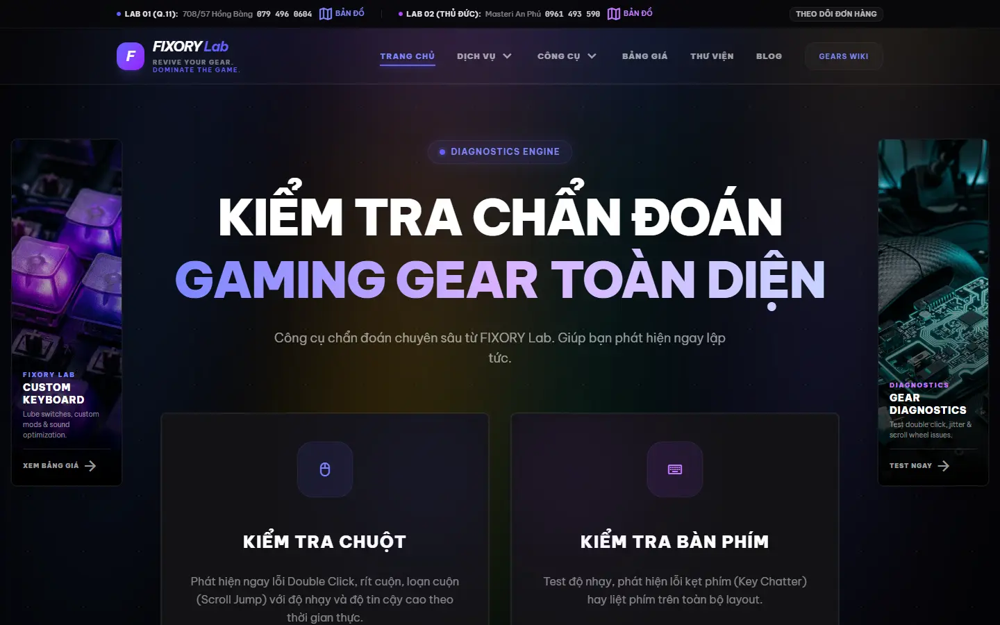
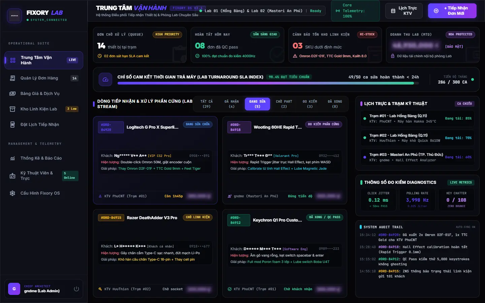
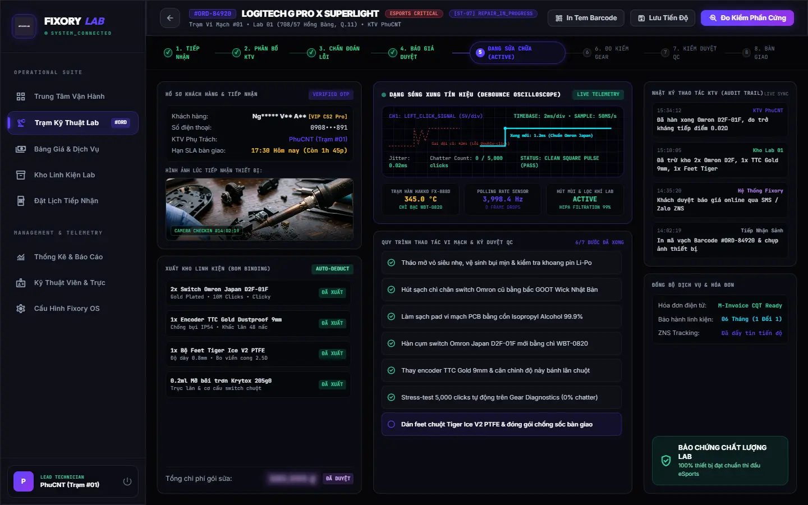

01—03
Intake & Service
Operations Command Center, online receiving appointments, and a controlled service pricing catalog.
One repair system connecting online intake, technician queues, parts inventory, electrical diagnostics, quality control, invoicing, notifications, analytics, and customer tracking.
2 LABS // HO CHI MINH CITY

Gaming gear repair breaks down when customer conversations, technician notes, spare parts, promised deadlines, testing results, and delivery updates live in separate tools. At 300+ premium devices per month, memory and chat threads cannot be the operating model.
gndme founded FIXORY Lab and built a closed-loop Repair OS around the actual bench workflow—from first intake to verified handover—so every device carries its owner, SLA, diagnosis, parts, measurements, audit trail, and customer-facing status.
The operations center merges both physical labs into one decision surface. Repair queues, same-day completions, low-stock warnings, technician stations, live diagnostic telemetry, monthly throughput, and audit events stay visible without interrupting technicians for status updates.

Eight customer-facing milestones map to a 12-state internal engine that also handles operational branches and controlled waiting states.

Operations Command Center, online receiving appointments, and a controlled service pricing catalog.
Micro-component inventory with automatic BOM deduction, Gear Diagnostics test stations, and technician duty scheduling.
M-Invoice with SMS/ZNS notifications, operational analytics, and a public customer progress portal.
A device is not marked ready because it simply powers on. FIXORY's workstation captures electrical signal behavior, polling-rate stability, automated input stress tests, checklist completion, and the technician audit trail before handover.
Six to ten specialists operate from two customer-facing locations in Ho Chi Minh City while sharing the same repair queue, parts controls, service standards, and customer timeline.
The system turns repair quality, promised time, component consumption, and customer communication into measurable operating controls—not informal shop knowledge.
FIXORY Lab's full Repair OS entered production in Q1 2026, connecting the public service experience with daily multi-lab operations.